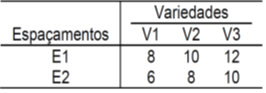
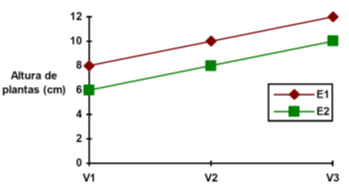
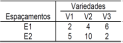
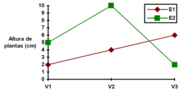
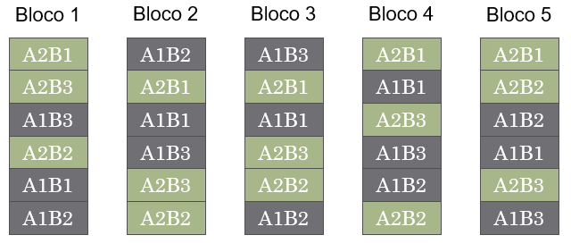
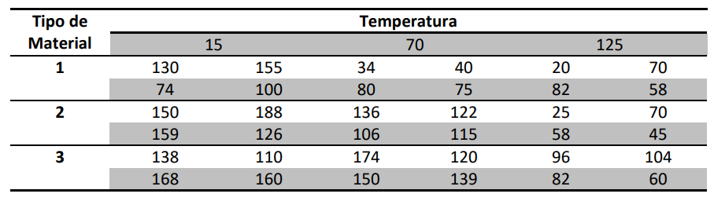
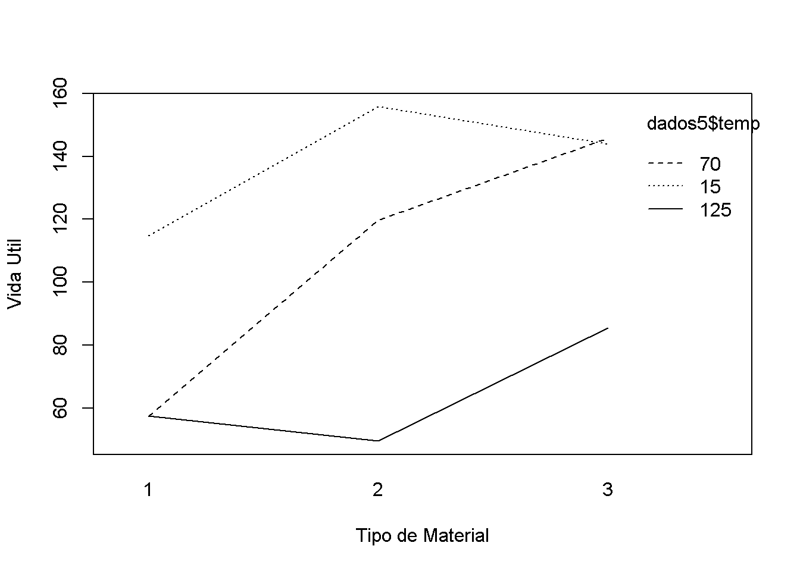
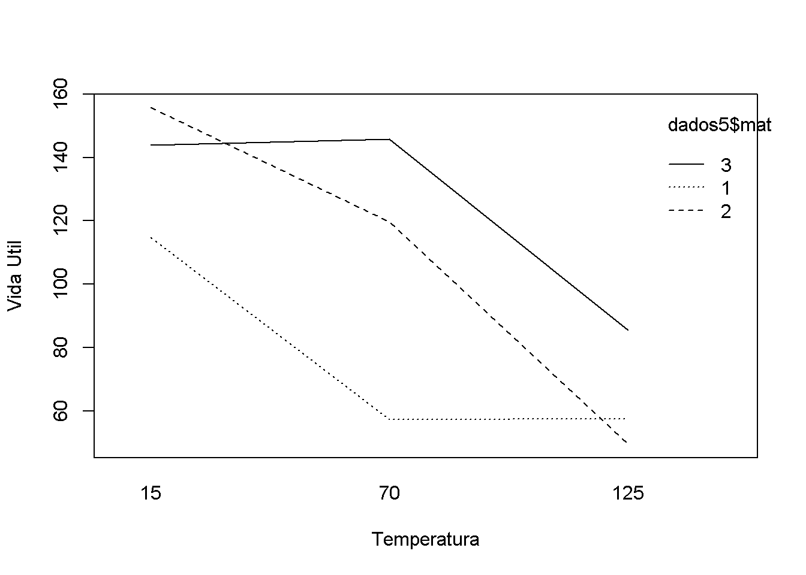
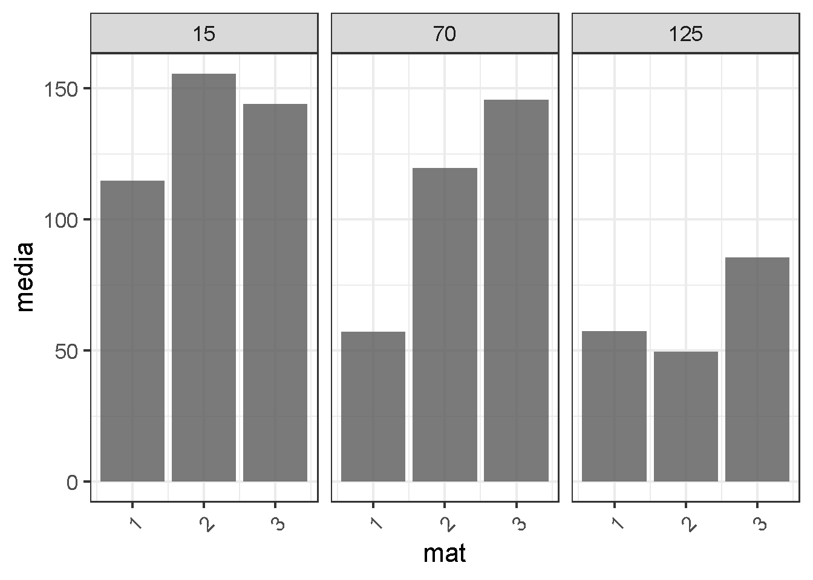

Capítulo 7 Experimentos Fatoriais
7.1 Introdução
Experimentos Fatoriais são aqueles em que testamos simultaneamente dois ou mais fatores
Os diferentes níves de cada fator também são estudados
Exemplos:
- Estudar o efeito da temperatura (30, 40 e 50 °C), do pH (baixo, médio e alto) no rendimento (mol/L) de uma reação química:
- Dois fatores em estudo: 3 x 3 = 32 = 9 tratamentos
- Estudar três diferentes tipos de tinta para aviões (A, B e C) e dois diferentes métodos de aplicação (imersão e aspersão) na força de adesão (N/m)
- Dois fatores em estudo: 3 x 2 = 6 tratamentos
- Estudar o desempenho de quatro cultivares (A, B, C e D) em três ambientes (Rio Paranaíba, Cristalina e Sorriso)
- Dois fatores em estudo: 4 x 3 = 12
- Estudar o efeito da temperatura (30, 40 e 50 °C), do pH (baixo, médio e alto) no rendimento (mol/L) de uma reação química:
Veja que, as combinações dos níveis dos fatores é o número de tratamentos no estudo: IJ = N° de tratamentos
7.2 Tipos de Efeitos
- Efeito Principal: É o efeito individual de cada fator, independente do efeito de outros fatores
- Interação: É o efeito conjunto para os fatores estudados. Ocorre interação quando o efeito de um fator influencia o efeito de outro fator
Exemplo: Considere um experimento fatorial 3x2, em que os fatores em testes são Variedade (V) e Espaçamento (E). Suponha os seguintes resultados fictícios, para a variável altura de plantas (cm), nas seguintes situações:
- Não há interação entre Fatores:
- Quando não há interação (ação independente) as diferenças entre os resultados dos níveis de um fator são estatisticamente iguais para todos os níveis do outro fator.

- Não há interação entre Fatores:
- Quando há interação significicativa as diferenças entre os níveis de um fator dependem dos níveis do outro fator.

7.3 Casualização em Experimentos Fatoriais
Os experimentos fatoriais podem ser delineados tanto de forma inteiramente casualizada, como em blocos completos casualizados.
- Significa dizer que podem ser organizados em DIC ou DBC
Vamos verificar um exemplo em DBC:
Exemplo: Suponha um experimento no esquema fatorial com dois fatores (A e B), dispostos em blocos casualizados, com 5 repetições. O fator A possui dois níveis (A1 e A2). O fator B possui três níveis (B1, B2 e B3). Cada combinação (AiBj) dos níveis de cada fator constituem o que chamamos de tratamentos. Como o delineamento utilizado é o DBC, devemos casualizar todos os tratamentos em cada bloco, conforme a figura abaixo:

Exemplo 1
Considere que um engenheiro está desenvolvendo um modelo de bateria para uso em condições extremas de temperatura. Para tanto, estão sendo testados três tipos diferentes de materiais. Para verificar o desempenho destes materiais, e testar as condições de temperatura que devem influenciar a vida útil das baterias (em horas), o engenheiro decidiu realizar um ensaio com os três materiais (1, 2 e 3) em três níveis de temperatura (15, 70 e 125 °C). Para realizar o ensaio, conjuntos de quatro baterias foram testados em cada combinação de material e temperatura. Todos os testes foram conduzidos de forma completamente aleatorizada. Os resultados dos experimentos são dados na tabela abaixo.

O modelo fatorial com a interação a ser utilizado será:
\[ y_{ijk}=\mu +\alpha _{i}+\beta _{j}+\alpha \beta_{ij}+\epsilon _{ijk}\]
- Importação do Data Set
## mat temp rep y
## 1 1 15 1 130
## 2 1 15 2 155
## 3 1 15 3 74
## 4 1 15 4 100
## 5 1 70 1 34
## 6 1 70 2 40
## 7 1 70 3 80
## 8 1 70 4 75
## 9 1 125 1 20
## 10 1 125 2 70
## 11 1 125 3 82
## 12 1 125 4 58
## 13 2 15 1 150
## 14 2 15 2 188
## 15 2 15 3 159
## 16 2 15 4 126
## 17 2 70 1 136
## 18 2 70 2 122
## 19 2 70 3 106
## 20 2 70 4 115
## 21 2 125 1 25
## 22 2 125 2 70
## 23 2 125 3 58
## 24 2 125 4 45
## 25 3 15 1 138
## 26 3 15 2 110
## 27 3 15 3 168
## 28 3 15 4 160
## 29 3 70 1 174
## 30 3 70 2 120
## 31 3 70 3 150
## 32 3 70 4 139
## 33 3 125 1 96
## 34 3 125 2 104
## 35 3 125 3 82
## 36 3 125 4 60- Gráficos da Interação
- Por meio de comandos simples podemos investigar as possíveis interações presentes
# Gráfico 1
interaction.plot(dados5$mat, dados5$temp, dados5$y, xlab="Tipo de Material", ylab="Vida Util")
# Gráfico 2
interaction.plot(dados5$temp, dados5$mat, dados5$y, xlab="Temperatura", ylab="Vida Util")
- Análise de Variância
- A ANOVA e todos os testes subsequentes pode ser realizada facilmente pelo pacote
ExpDes.pt
require(ExpDes.pt)
with(data = dados5,
fat2.dic(mat, temp, y,
quali=c(TRUE, FALSE),
mcomp = "tukey",
fac.names = c("Material","Temperatura")
)
)## ------------------------------------------------------------------------
## Legenda:
## FATOR 1: Material
## FATOR 2: Temperatura
## ------------------------------------------------------------------------
##
##
## Quadro da analise de variancia
## ------------------------------------------------------------------------
## GL SQ QM Fc Pr>Fc
## Material 2 14617 5 12.4966 0.0001439
## Temperatura 2 33185 2 28.3712 0.0000002
## Material*Temperatura 4 8360 3 3.5738 0.0183064
## Residuo 27 15791 4
## Total 35 71954 1
## ------------------------------------------------------------------------
## CV = 23.41 %
##
## ------------------------------------------------------------------------
## Teste de normalidade dos residuos (Shapiro-Wilk)
## valor-p: 0.4849213
## De acordo com o teste de Shapiro-Wilk a 5% de significancia, os residuos podem ser considerados normais.
## ------------------------------------------------------------------------
##
##
##
## Interacao significativa: desdobrando a interacao
## ------------------------------------------------------------------------
##
## Desdobrando Material dentro de cada nivel de Temperatura
## ------------------------------------------------------------------------
## ------------------------------------------------------------------------
## Quadro da analise de variancia
## ------------------------------------------------------------------------
## GL SQ QM Fc Pr.Fc
## Temperatura 2 33185.389 16592.6944 28.3712 0
## Material:Temperatura 15 2 3566.167 1783.0833 3.0488 0.064
## Material:Temperatura 70 2 16552.667 8276.3333 14.1514 1e-04
## Material:Temperatura 125 2 2858.667 1429.3333 2.444 0.1058
## Residuo 27 15790.750 584.8426
## Total 35 71953.639 2055.8182
## ------------------------------------------------------------------------
##
##
##
## Material dentro do nivel 15 de Temperatura
##
## De acordo com o teste F, as medias desse fator sao estatisticamente iguais.
## ------------------------------------------------------------------------
## Niveis Medias
## 1 1 114.75
## 2 2 155.75
## 3 3 144.00
## ------------------------------------------------------------------------
##
##
## Material dentro do nivel 70 de Temperatura
## ------------------------------------------------------------------------
## Teste de Tukey
## ------------------------------------------------------------------------
## Grupos Tratamentos Medias
## a 3 145.75
## a 2 119.75
## b 1 57.25
## ------------------------------------------------------------------------
##
##
## Material dentro do nivel 125 de Temperatura
##
## De acordo com o teste F, as medias desse fator sao estatisticamente iguais.
## ------------------------------------------------------------------------
## Niveis Medias
## 1 1 57.5
## 2 2 49.5
## 3 3 85.5
## ------------------------------------------------------------------------
##
##
##
## Desdobrando Temperatura dentro de cada nivel de Material
## ------------------------------------------------------------------------
## ------------------------------------------------------------------------
## Quadro da analise de variancia
## ------------------------------------------------------------------------
## GL SQ QM Fc Pr.Fc
## Material 2 14617.056 7308.5278 12.4966 1e-04
## Temperatura:Material 1 2 8778.500 4389.2500 7.505 0.0026
## Temperatura:Material 2 2 23360.167 11680.0833 19.9713 0
## Temperatura:Material 3 2 9407.167 4703.5833 8.0425 0.0018
## Residuo 27 15790.750 584.8426
## Total 35 71953.639 2055.8182
## ------------------------------------------------------------------------
##
##
##
## Temperatura dentro do nivel 1 de Material
## ------------------------------------------------------------------------
## Ajuste de modelos polinomiais de regressao
## ------------------------------------------------------------------------
##
## Modelo Linear
## =========================================
## Estimativa Erro.padrao tc valor.p
## -----------------------------------------
## b0 112.9318 12.9289 8.7349 0
## b1 -0.5205 0.1555 -3.3479 0.0024
## -----------------------------------------
##
## R2 do modelo linear
## --------
## 1
## --------
## 0.746725
## --------
##
## Analise de variancia do modelo linear
## ============================================================
## GL SQ QM Fc valor.p
## ------------------------------------------------------------
## Efeito linear 1 6,555.1250 6,555.1250 11.21 0.00241
## Desvios de Regressao 1 2,223.3750 2,223.3750 3.8 0.06166
## Residuos 27 15,790.7500 584.8426
## ------------------------------------------------------------
## ------------------------------------------------------------------------
##
## Modelo quadratico
## =========================================
## Estimativa Erro.padrao tc valor.p
## -----------------------------------------
## b0 140.4545 19.1419 7.3376 0
## b1 -1.8568 0.7028 -2.6420 0.0135
## b2 0.0095 0.0049 1.9498 0.0617
## -----------------------------------------
##
## R2 do modelo quadratico
## -
## 1
## -
##
## Analise de variancia do modelo quadratico
## ============================================================
## GL SQ QM Fc valor.p
## ------------------------------------------------------------
## Efeito linear 1 6,555.1250 6,555.1250 11.21 0.00241
## Efeito quadratico 1 2,223.3750 2,223.3750 3.8 0.06166
## Desvios de Regressao 0 0 0 0 1
## Residuos 27 15,790.7500 584.8426
## ------------------------------------------------------------
## ------------------------------------------------------------------------
##
##
## Temperatura dentro do nivel 2 de Material
## ------------------------------------------------------------------------
## Ajuste de modelos polinomiais de regressao
## ------------------------------------------------------------------------
##
## Modelo Linear
## =========================================
## Estimativa Erro.padrao tc valor.p
## -----------------------------------------
## b0 175.9470 12.9289 13.6088 0
## b1 -0.9659 0.1555 -6.2133 0
## -----------------------------------------
##
## R2 do modelo linear
## --------
## 2
## --------
## 0.966522
## --------
##
## Analise de variancia do modelo linear
## =============================================================
## GL SQ QM Fc valor.p
## -------------------------------------------------------------
## Efeito linear 1 22,578.1200 22,578.1200 38.61 0
## Desvios de Regressao 1 782.0417 782.0417 1.34 0.25766
## Residuos 27 15,790.7500 584.8426
## -------------------------------------------------------------
## ------------------------------------------------------------------------
##
## Modelo quadratico
## =========================================
## Estimativa Erro.padrao tc valor.p
## -----------------------------------------
## b0 159.6240 19.1419 8.3390 0
## b1 -0.1733 0.7028 -0.2466 0.8070
## b2 -0.0057 0.0049 -1.1564 0.2577
## -----------------------------------------
##
## R2 do modelo quadratico
## -
## 1
## -
##
## Analise de variancia do modelo quadratico
## =============================================================
## GL SQ QM Fc valor.p
## -------------------------------------------------------------
## Efeito linear 1 22,578.1200 22,578.1200 38.61 0
## Efeito quadratico 1 782.0417 782.0417 1.34 0.25766
## Desvios de Regressao 0 0 0 0 1
## Residuos 27 15,790.7500 584.8426
## -------------------------------------------------------------
## ------------------------------------------------------------------------
##
##
## Temperatura dentro do nivel 3 de Material
## ------------------------------------------------------------------------
## Ajuste de modelos polinomiais de regressao
## ------------------------------------------------------------------------
##
## Modelo Linear
## =========================================
## Estimativa Erro.padrao tc valor.p
## -----------------------------------------
## b0 162.3106 12.9289 12.5541 0
## b1 -0.5318 0.1555 -3.4210 0.0020
## -----------------------------------------
##
## R2 do modelo linear
## --------
## 3
## --------
## 0.727584
## --------
##
## Analise de variancia do modelo linear
## ===========================================================
## GL SQ QM Fc valor.p
## -----------------------------------------------------------
## Efeito linear 1 6,844.5000 6,844.5000 11.7 0.002
## Desvios de Regressao 1 2,562.6670 2,562.6670 4.38 0.04585
## Residuos 27 15,790.7500 584.8426
## -----------------------------------------------------------
## ------------------------------------------------------------------------
##
## Modelo quadratico
## =========================================
## Estimativa Erro.padrao tc valor.p
## -----------------------------------------
## b0 132.7624 19.1419 6.9357 0
## b1 0.9029 0.7028 1.2847 0.2098
## b2 -0.0102 0.0049 -2.0933 0.0458
## -----------------------------------------
##
## R2 do modelo quadratico
## -
## 1
## -
##
## Analise de variancia do modelo quadratico
## ===========================================================
## GL SQ QM Fc valor.p
## -----------------------------------------------------------
## Efeito linear 1 6,844.5000 6,844.5000 11.7 0.002
## Efeito quadratico 1 2,562.6670 2,562.6670 4.38 0.04585
## Desvios de Regressao 0 0 0 0 1
## Residuos 27 15,790.7500 584.8426
## -----------------------------------------------------------
## ------------------------------------------------------------------------7.3.1 Outros Gráficos!
## ── Attaching core tidyverse packages ────────────────────────── tidyverse 2.0.0 ──
## ✔ dplyr 1.1.4 ✔ readr 2.1.5
## ✔ forcats 1.0.0 ✔ stringr 1.5.1
## ✔ lubridate 1.9.3 ✔ tibble 3.2.1
## ✔ purrr 1.0.2 ✔ tidyr 1.3.1
## ── Conflicts ──────────────────────────────────────────── tidyverse_conflicts() ──
## ✖ dplyr::filter() masks stats::filter()
## ✖ dplyr::lag() masks stats::lag()
## ℹ Use the conflicted package (<http://conflicted.r-lib.org/>) to force all conflicts to become errors## `summarise()` has grouped output by 'mat'. You can override using the `.groups`
## argument.## # A tibble: 9 × 3
## # Groups: mat [3]
## mat temp media
## <int> <int> <dbl>
## 1 1 15 115.
## 2 1 70 57.2
## 3 1 125 57.5
## 4 2 15 156.
## 5 2 70 120.
## 6 2 125 49.5
## 7 3 15 144
## 8 3 70 146.
## 9 3 125 85.5ggplot(dados6, aes(mat, media)) +
geom_col(alpha = 0.8, position = "dodge") +
facet_wrap(~temp) +
theme_bw(16) +
theme(axis.text.x = element_text(angle = 45, hjust = 1, vjust = 1))
#Relatório Final AGR 194 - Estatística Experimental
7.4 Efeito do teor de celulose na resistência à tração em embalagens de papel
7.4.1 Introdução
A produção de papel desempenha um papel fundamental na sociedade contemporânea, sendo um dos pilares da comunicação escrita e da preservação de informações (Hubbe et al., 2019). A qualidade do papel, por sua vez, está intrinsecamente ligada às propriedades da celulose, principal componente proveniente da madeira, que serve como matéria-prima para a fabricação do papel (Aspinwall et al., 2017). Este artigo visa explorar a relação entre a resistência à tração do papel e os diferentes teores de celulose presentes na madeira utilizada na sua produção.
A celulose, um polissacarídeo composto por longas cadeias de glicose, é o principal componente estrutural das fibras vegetais, sendo extraída da madeira por meio de processos industriais (Pelissari et al., 2018). Diversos fatores influenciam a qualidade da celulose, tais como a espécie da árvore, o método de extração e o processamento subsequente (Basta et al., 2019). Estudos anteriores destacaram a importância da celulose na determinação das propriedades físicas e mecânicas do papel, sendo a resistência à tração uma característica crucial para garantir a durabilidade e desempenho adequado do material (Gurnagul & Page, 1992).
Ao longo das últimas décadas, pesquisadores têm se dedicado a compreender como variações nos teores de celulose na madeira afetam a resistência à tração do papel resultante (Aspinwall et al., 2017). Uma série de investigações tem indicado que diferentes tipos de madeira possuem composições celulósicas distintas, o que influencia diretamente na qualidade e resistência do papel produzido (Basta et al., 2019). Essas descobertas têm implicações significativas para a indústria de papel, fornecendo insights valiosos para otimizar a escolha da matéria-prima e os processos de produção.
Este artigo busca contribuir para o entendimento aprofundado da relação entre teores de celulose na madeira e a resistência à tração do papel, consolidando informações provenientes de estudos prévios e explorando novas perspectivas (Hubbe et al., 2019). Ao fazê-lo, pretende-se fornecer subsídios que possam orientar a indústria na tomada de decisões mais informadas e sustentáveis, promovendo avanços significativos na produção de papel.
7.4.2 Materiais e Métodos
O experimento foi conduzido utilizando um delineamento inteiramente casualizado, onde os diferentes níveis de concentração de celulose na madeira foram atribuídos aleatoriamente aos corpos de prova. Diferentes tipos de madeira foram utilizados, cada uma com concentrações variadas de celulose. A escolha da madeira foi baseada em considerações sobre a composição celulósica, levando em conta a influência desta na resistência do papel (Basta et al., 2019). A variável independente principal foi a concentração de celulose na madeira, com quatro níveis distintos: 5%, 10%, 15%, e 20%.
Seis corpos de prova foram fabricados para cada nível de concentração, totalizando 24 amostras. A fabricação dos corpos de prova foi realizada em uma planta piloto, garantindo condições controladas e representativas do processo industrial de produção de papel (Figura 1). Os 24 corpos de prova foram submetidos a testes de resistência à tração em um equipamento de laboratório. Os resultados foram registrados em psi (libra/polegada²), proporcionando dados quantitativos sobre a resistência do papel em diferentes concentrações de celulose.